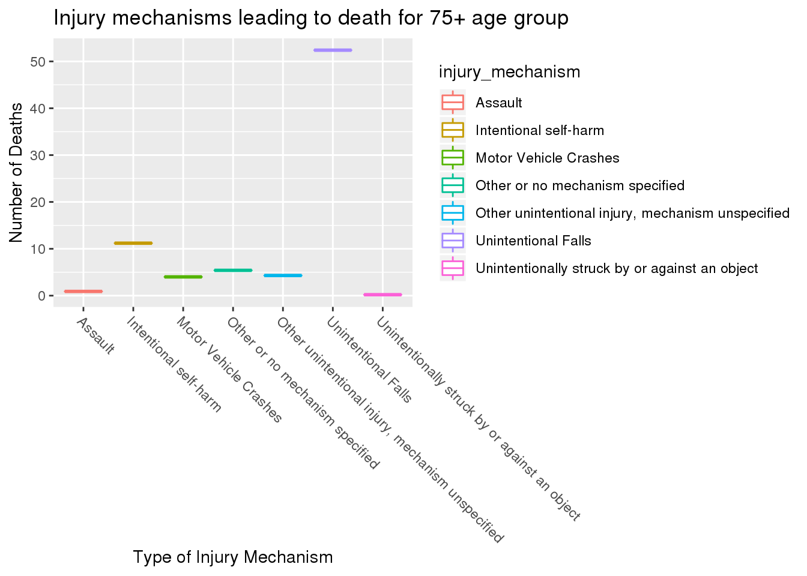

library(tidyverse)
library(tinytex)
dat<- read_csv(here::here("data", "tidytuesday", "data", "2020", "2020-03-24", "tbi_age.csv"
))
dat1<- read_csv(here::here("data", "tidytuesday", "data", "2020", "2020-03-24", "tbi_year.csv"
))
dat2<- read_csv(here::here("data", "tidytuesday", "data", "2020", "2020-03-24", "tbi_military.csv"
))
Traumatic Brain Injury
For this project, I am examining the traumatic brain injury (TBI) within the data set tbi_age.csv file from the Tidy Tuesday website. The data set has 216 observations of 5 variables. The variable age_group is a factor of 231 levels that represents the age groups of victims of TBI. The variable type is a factor of 231 levels that represents the where the victim went to treat their injury, or the effect of the injury. The variable injury_mechanism is a factor of 231 levels that represents how the victim obtained their injury. The variable number_set is a factor of 231 levels that represents the estimated observed cases in 2014.The variable rate_est is a factor of 231 levels that represents the where the victim went to treat their injury.
With the second, tbi_year.csv data set from Tidy Tuesday website further examines these injuries. The data set has 216 observations of 5 variables. The variable injury_mechanism is a factor of 216 levels that represents how the injury was received. The variable type is a factor of 216 levels that represents went to treat their injury, or the effect of the injury. The variable year is a factor of 216 levels that represents the year of the injury. The variable rate_est is a factor of 216 levels that rate/100,000 in 2014. The variable number_est is a factor of 216 levels that represents estimated observed cases in each year.
The last data set, tbi_military.csv from Tidy Tuesday specifically delves into brain injuries specifically from military personnel. The data set has 450 observations and 5 variables. The variable service is a factor of 450 levels that represents the military branch of the victim’s branch. The variable component is a factor of 450 levels that represents whether the victim is active, guard, or reserve). The variable type is a severity of 450 levels that represents the severity of the injury. The variable diagnosed is a factor of 450 levels that represents the number of diagnoses per year. The variable year is a factor of 450 levels that represents year the injury was observed.
glimpse(dat)
## Observations: 231
## Variables: 5
## $ age_group <chr> "0-17", "0-17", "0-17", "0-17", "0-17", "0-17", "0-1…
## $ type <chr> "Emergency Department Visit", "Emergency Department …
## $ injury_mechanism <chr> "Motor Vehicle Crashes", "Unintentional Falls", "Uni…
## $ number_est <dbl> 47138, 397190, 229236, 55785, NA, 24360, 57983, 5464…
## $ rate_est <dbl> 64.1, 539.8, 311.6, 75.8, NA, 33.1, 78.8, 27.5, 1161…
Question 1
What age group is most likely to receive a traumatic brain injury from which injury mechanism?
To determine this relationship, I will examine a graph relating the age groups to the different injury mechanisms. As well, I want to observe this in a box plot, allowing easy observation over the median, minimum, and maximum ages these injury mechanisms occur.
library(ggplot2)
ggplot(data =dat)+
geom_point(mapping = aes(x = age_group, y = number_est, color = injury_mechanism ))+
xlab("Age Group") +
ylab("Number of Injuries") +
theme(axis.text.x = element_text(angle =- 45, hjust = 0))+
ggtitle("Most common injurt mechanisms per age group")
## Warning: Removed 11 rows containing missing values (geom_point).
Unintentional falls is one of the most substantial injury mechanisms in the data, with it being the greatest reason for almost all the age groups, and being the greatest out of the total group by a large margin. Next most prominent injury mechanism is being unintentionally struck by or against an object, being the second largest for the most of the age groups as well. From this, it appears that there is no correlation between the different types of injury mechanism and the different age groups.
glimpse(dat2)
## Observations: 450
## Variables: 5
## $ service <chr> "Army", "Army", "Army", "Army", "Army", "Army", "Army", "Ar…
## $ component <chr> "Active", "Active", "Active", "Active", "Active", "Guard", …
## $ severity <chr> "Penetrating", "Severe", "Moderate", "Mild", "Not Classifia…
## $ diagnosed <dbl> 189, 102, 709, 5896, 122, 33, 26, 177, 1332, 29, 12, 11, 63…
## $ year <dbl> 2006, 2006, 2006, 2006, 2006, 2006, 2006, 2006, 2006, 2006,…
Question 2
As the prevalence of TBI has increased in the military branches, has there been any decrease in the amount of concussions diagnosed throughout the years? If not, has severity at least lessened throughout the years?
To determine, I will generate a graph to visualize the number of diagnosed and year of diagnoses, as well as a visualization of the severity of the TBI compared to the year of diagnoses
ggplot(data = dat2)+
geom_boxplot(mapping = aes(y = diagnosed, x = factor(year) , color = service))+
ylab("number of diagnoses") +
xlab("year") +
facet_wrap(~ severity, scale = "free")+
theme(axis.text.x = element_text(angle =- 45, hjust = 0))+
ggtitle("Number of diagnoses compared to its severity per year ")
## Warning: Removed 12 rows containing non-finite values (stat_boxplot).
Of the brain injuries, there is not much to very little change in the data as years progress for the different levels of severity. The graph above makes it apparent that the Army Branch has the widest range of all types of severity throughout all the years. However, the mild and moderate concussions are much more substantial than the not classifiable, penetrating, severe types of concussions. All the other branches remain relatively constant maintaining few TBIs and maintaining approximately the same amount each year.
ggplot(data = dat2)+
geom_point(mapping = aes(y = diagnosed, x = year , color = service))
## Warning: Removed 12 rows containing missing values (geom_point).
 This is another graph depicting the amount diagnosed per year throughout the military. Again, the Army has way more cases each year than any other branch in the military.
This is another graph depicting the amount diagnosed per year throughout the military. Again, the Army has way more cases each year than any other branch in the military.
#Question 3
Throughout the different data sets, are deaths from TBI severity based?
To determine, I will create a graphic between the type or severity of the TBI to the deaths for the two data sets that have such data available.
glimpse(dat1)
## Observations: 216
## Variables: 5
## $ injury_mechanism <chr> "Motor vehicle crashes", "Motor vehicle crashes", "M…
## $ type <chr> "Emergency Department Visit", "Emergency Department …
## $ year <dbl> 2006, 2007, 2008, 2009, 2010, 2011, 2012, 2013, 2014…
## $ rate_est <dbl> 85.3, 83.8, 83.9, 88.7, 95.3, 98.7, 99.9, 99.6, 106.…
## $ number_est <dbl> 254793, 252459, 254391, 270240, 292942, 305694, 3112…
graph1<-filter(dat1, type %in% c("Deaths" ))%>%
ggplot(aes(y = number_est,x= type, color = injury_mechanism))+
geom_point(mapping = aes(y= number_est, x= type, color = injury_mechanism))+
theme(axis.text.x = element_text(angle =- 45, hjust = 0))+
ggtitle("Injury mechanism leading to Deaths")
graph1
## Warning: Removed 9 rows containing missing values (geom_point).
graph2<-filter(dat, type %in% c("Deaths" ))%>%
ggplot(aes(y = number_est,x= type, color = injury_mechanism))+
geom_point(mapping = aes(y= number_est, x= type, color = injury_mechanism))+
theme(axis.text.x = element_text(angle =- 45, hjust = 0))+
ggtitle("Injury mechanisms leading to death")
graph2
## Warning: Removed 3 rows containing missing values (geom_point).

#graph examining deaths per age group
# graph3<-filter(dat, type %in% c("Deaths" ))%>%
# ggplot(aes(x= age_group,y= type, color = injury_mechanism))+
# geom_point(mapping = aes(z= age_group, y= type, color = injury_mechanism))+
# theme(axis.text.x = element_text(angle =- 45, hjust = 0))
# graph3
The graphs both depict that "Intentional self harm causes the most deaths for TBI injuries. Of the unintentional mechanisms, unintentional falls and motor vehicle crashes are the most deathly injury mechanism. For the most part, the other injury mechanisms maintain the same amount of deaths, so it is very clear from the data that the most deadly
glimpse(dat)
## Observations: 231
## Variables: 5
## $ age_group <chr> "0-17", "0-17", "0-17", "0-17", "0-17", "0-17", "0-1…
## $ type <chr> "Emergency Department Visit", "Emergency Department …
## $ injury_mechanism <chr> "Motor Vehicle Crashes", "Unintentional Falls", "Uni…
## $ number_est <dbl> 47138, 397190, 229236, 55785, NA, 24360, 57983, 5464…
## $ rate_est <dbl> 64.1, 539.8, 311.6, 75.8, NA, 33.1, 78.8, 27.5, 1161…
Conclusion: